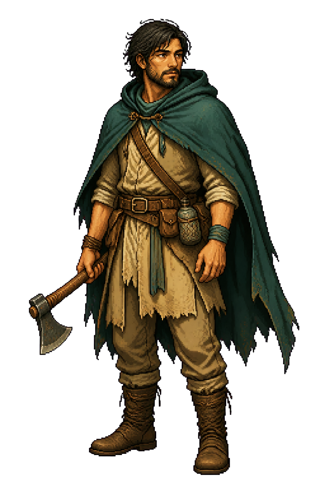
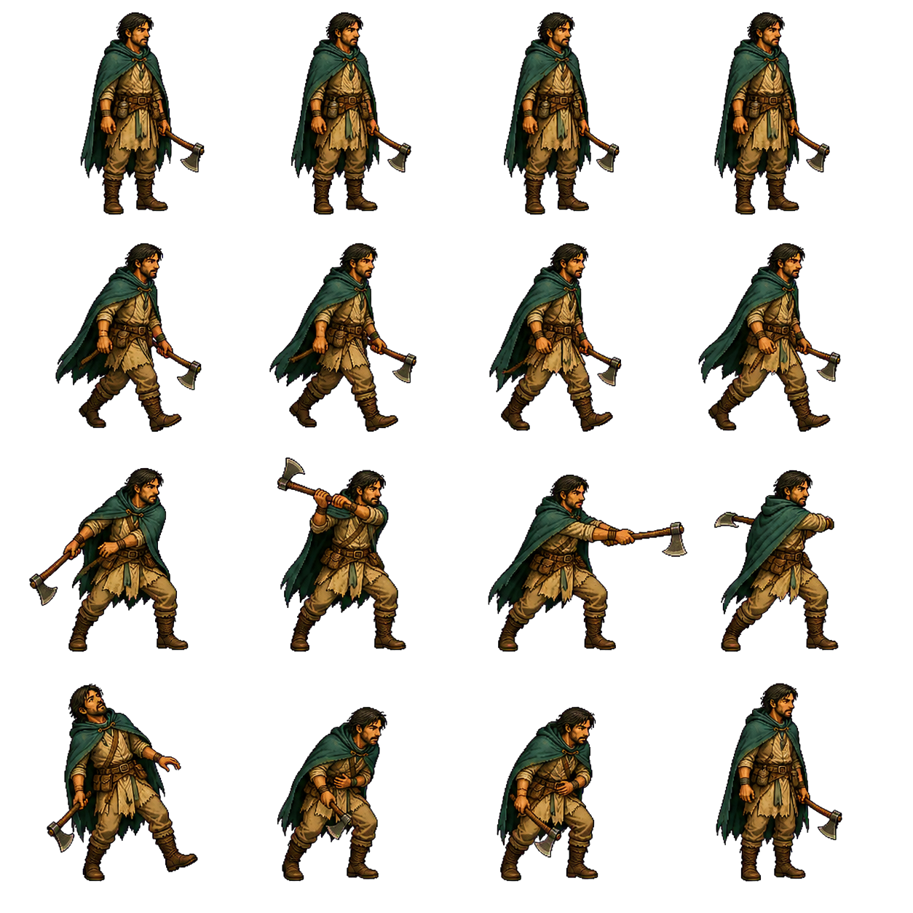

TOOL
石制小刀
选择一件物品，观察装备和拆解是否保持状态一致。
- 采集
- +2
- 耐久
- +0
SOURCE → REPRODUCE → VERIFY → TRANSFER
每个案例同时拆解产品机制与视觉生产能力。左侧选择原作，中间操作原创微型场景，右侧查看资产、构图、渲染、验证边界和对海岛游戏的迁移价值。
靠近敌人，观察预警，再用三段攻击击退它。
CHARACTER LOADOUT


LOCAL INVENTORY
选择一件物品，观察装备和拆解是否保持状态一致。
状态变化会自动写入本地存档。
文字证据与控制说明仍可阅读；请在支持WebGL的浏览器中重试。
拖动舞台改变视角，使用WASD移动。
建造规则说明仍然可读；请在支持WebGL的浏览器中重试。
选择类型，然后点击空白网格建造。
3D 探索 → 搜集资源 → 制作并装备石斧 → 战斗与掉落 → 建造篝火 → 统一保存
进入完整生存链 → R7 · VISUAL VERTICAL SLICE 风暴后的出生海滩：不增加玩法，只验证目标画面月牙海湾 → 实时波浪与泡沫 → 湿沙与礁石 → 正常人物比例 → 风暴/天光状态 → 概念目标对照
进入实时视觉切片 →WHY THE ORIGINALS LOOK FINISHED
四个案例并非都用图片伪装成游戏。Adventure 与 Online 主要用 2D 媒体承载人物和身份；Backroom 与 MiniTown 使用实时 3D，但主动选择了模块走廊、固定等距镜头和风格化几何，避开照片级人物与复杂自然生态的资产成本。
森林、人物、敌人和动作帧已经画在媒体里；程序负责切帧、碰撞、伤害和 HUD 同步，因此固定视角下很快拥有完整游戏感。
代价：新增方向、动作和装备通常需要继续制作图片。视觉重点是人物身份、装备槽、物品稀有度和属性变化，不要求建立可以自由旋转的完整世界。
代价：它不能证明开放世界或多人空间已经实现。墙体、走廊和设备可以重复组合；压迫感来自尺度、重复、第一人称观察和光雾，而不是热带植物或真实人物。
代价：成品质量仍依赖模型库、材质与后处理链。固定镜头隐藏背面和近景细节，简化房屋、道路和植被可以反复复用，同时把建造数据直接映射为世界变化。
代价：它不等同于写实、自由镜头的开放世界。固定或半固定镜头；人物、树叶、远景、泡沫和天气可以用图集、分层背景、透明特效或面向镜头的素材完成。
资源有限时，更容易快速获得较高的表面完成度。需要模型、UV、PBR 贴图、骨骼、动画、材质、灯光、LOD 与性能优化；自由镜头越强，资产生产范围越大。
长期自由度更高，但没有生产资产时最容易暴露占位感。CAPABILITY MATRIX
图集动画、动作时序、打击反馈、HUD同步。
适合验证人物与交互手感物品模型、装备规则、原子交换、持久化。
适合验证资源与长期成长3D资产、LOD、实例化、灯光、雾和后处理。
适合验证真实空间可信度网格状态、批量对象、昼夜和世界反馈。
适合验证营地从无到有